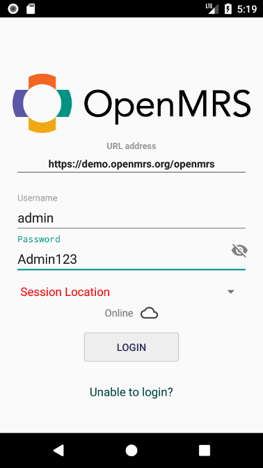
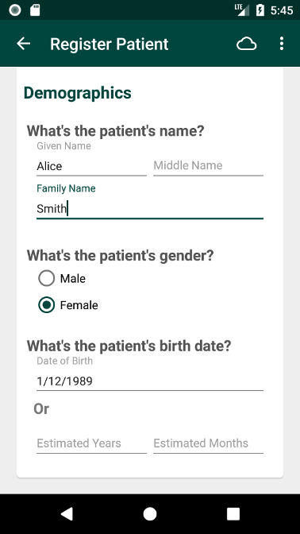
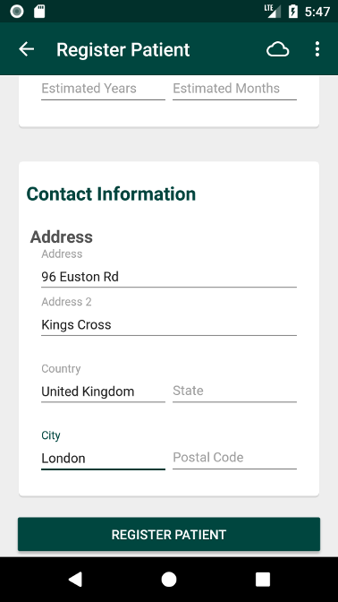

Getting started
Installation
To install the OpenMRS Android Client on your Android device, head over to Google Play using this link: https://play.google.com/store/apps/details?id=org.openmrs.mobile
Requirements:
- Android device with Android OS 4.1 or higher
- OpenMRS server 2.2 or higher with REST module installed
Logging in
As you start the OpenMRS application, you are presented with the login screen. Here, you may provide the address to an OpenMRS server as well as login credentials. If you don't have access to your own server, or just wish to test out the application, you can use the following information:
- Server URL: https://demo.openmrs.org/openmrs
- Username: admin
- Password: Admin123

NB: To be able to login you must provide a location (e.g. "Inpatient Ward") for the session in the dropdown list.
Use Case - Patient Registration
After having successfully logged in, you may perform different activities. For instance, if you wish to register a new patient, click the "Register Patient" icon. You will be presented with a form in which you fill in the patient's information. When you have entered all the required information, press the "Register Patient" button at the end of the form. If the registration was successful, you will be presented with the patient's summary view from which you can access his/her visits and vitals information etc.
 